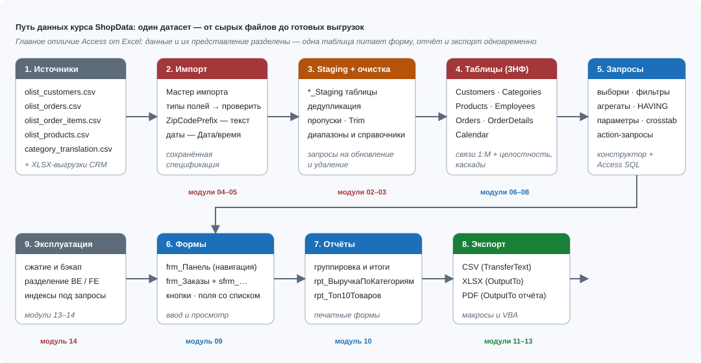

Модуль 04Импорт CSV и Excel
Цели обучения
Модуль открывает работу с внешними данными: любой анализ в Access начинается с загрузки файлов, которые присылают коллеги, CRM-система или поставщики. По итогам модуля студент сможет:
- импортировать CSV-файл в новую таблицу через мастер (Внешние данные → Новый источник данных → Из файла → Текстовый файл), управляя разделителем, квалификатором текста, кодировкой и обработкой первой строки;
- назначать типы данных каждому столбцу вручную и объяснять, почему поле ZipCodePrefix должно быть Коротким текстом, а не Числовым — на примере индекса 04570, который в числовом столбце превращается в 4570;
- различать импорт и связывание и осознанно выбирать вариант: разовая загрузка файла или «живой» источник, который читается на месте;
- применять staging-подход: сначала загрузка в рабочую таблицу Customers_Staging, затем проверка, затем перенос только новых строк запросом на добавление с защитой от повторов;
- сохранять шаги импорта как спецификацию (имя spec_ИмпортКлиентов) и запускать её повторно с панели «Сохранённые операции импорта».
Необходимые предварительные знания
Модуль опирается на первые три модуля курса. Нужен уверенный доступ к интерфейсу: лента, область навигации, вкладки документов (модуль 01), понимание типов данных Access и свойств полей (модуль 02), представление о первичных ключах и связях (модуль 03). Прямо пригодится бытовой опыт с файлами: если вы выгружали отчёт из CRM или открывали прайс-лист поставщика в Excel, вы уже видели «сырые» данные, которые будем загружать в ShopData.
- Модуль 01 — интерфейс Access 2007–2016, шесть типов объектов, область навигации.
- Модуль 02 — типы данных: Короткий текст, Числовой, Дата/время, Денежный; ведущие нули в ZipCodePrefix.
- Модуль 03 — первичный ключ Customers.CustomerID и связи, в которых участвует таблица Customers.
Если вы не уверены, чем Короткий текст отличается от Числового и зачем полю нужен уникальный индекс, вернитесь к модулю 02. Ошибки типов при импорте — самые частые и самые дорогие в исправлении: они тихо портят данные задолго до того, как вы заметите проблему в отчёте.
Теория
Аналитик почти никогда не получает данные в готовом виде. Список клиентов приходит выгрузкой из CRM в CSV, прайсы поставщиков — в XLSX, статистика заказов — отдельными файлами за неделю или месяц. Access в этой цепочке — станция обработки: файл выгрузки превращается в таблицу базы за несколько минут, а дальше с ним работают запросы, формы и отчёты. Полный путь данных проекта ShopData показан на рис. 4.1: файл выгрузки попадает в рабочую таблицу staging, проходит проверку и только затем переносится в боевые таблицы.

Мастер импорта текстового файла работает в двух режимах: «с разделителями» (поля разделены запятой, точкой с запятой или табуляцией) и «фиксированная ширина» (каждый столбец занимает заданное число позиций). Для файлов из CRM и с сайтов почти всегда подходит режим с разделителями. Квалификатор текста — символ кавычек — нужен, когда значение само содержит разделитель: фамилия «Carvalho, Bruno» в кавычках останется одним столбцом, без кавычек она разорвётся на два. Флажок «Первая строка содержит названия столбцов» превращает первую строку файла в имена полей. В расширенных параметрах задаётся кодировка (ANSI, то есть Windows-1251, или Unicode, то есть UTF-8) и десятичный разделитель для чисел — эти настройки критичны для файлов из внешних систем.
Типы данных столбцов Access «угадывает», глядя на первые строки файла. Это удобно, но опасно в трёх местах. Во-первых, ведущие нули: индекс 04570 в числовом столбце становится 4570, и почтовая сортировка ломается. Во-вторых, длинный текст: всё, что длиннее 255 символов, обрезается, если мастер решил, что столбец короткий текст. В-третьих, даты в текстовом формате: строка «2017-03-15» может попасть в текстовое поле и перестать сравниваться с настоящими датами. Правило аналитика: не доверять угадыванию и проверять предложенный тип для каждого столбца лично.
Второе базовое решение — импорт или связывание. Импорт копирует данные внутрь базы .accdb; связывание лишь описывает, где лежит файл, и читает его при каждом обращении. Сравнение дано в таблице ниже; глубоко связывание и автоматизацию обмена мы разберём в модулях 13 и 14, здесь достаточно понимания выбора.
| Критерий | Импорт | Связывание |
|---|---|---|
| Копия данных в базе | Да, файл можно удалить | Нет, нужен постоянный доступ к файлу |
| Скорость запросов | Высокая, данные локальны | Ниже, файл читается на месте |
| Изменения в исходном файле | Не видны, нужен повторный импорт | Видны сразу при следующем открытии |
| Когда применять | Разовая загрузка, архив, очистка | «Живой» источник, который обновляют другие |
Staging-подход — главный практический вывод модуля. Файл импортируется не в боевую таблицу Customers, а в рабочую Customers_Staging. Почему нельзя сразу в Customers? Потому что в файле будут повторы первичного ключа (CRM выгружает всех активных клиентов, а не только новых), потому что типы могли определиться неверно и потому что повторный запуск того же файла задвоил бы данные. Staging-таблица — «приёмное отделение»: там данные безопасно проверить, а потом перенести в Customers запросом на добавление с условием. Финальный штрих — флажок «Сохранить шаги импорта» в конце мастера: Access запоминает все настройки (разделитель, типы, кодировку) как спецификацию, и еженедельная загрузка становится кнопкой, а не повторением десяти шагов.
Пошаговая демонстрация
Импортируем еженедельный файл клиентов customers_week.csv в рабочую таблицу Customers_Staging базы ShopData.accdb. Файл: разделитель — запятая, квалификатор — кавычка, кодировка UTF-8, первая строка — заголовки CustomerID, CustomerName, ZipCodePrefix, City, State, Segment. В файле 6 строк: 4 новых покупателя (C-0009, C-0010, C-0011, C-0012) и 2 повтора уже существующих (C-0002, C-0005) — CRM присылает всех активных клиентов, а не только новых.
- Сохраните файл customers_week.csv в папку «Данные» рядом с базой ShopData.accdb и откройте файл в Блокноте: убедитесь, что разделитель — запятая, значения в кавычках, и в файле 7 строк (заголовок плюс 6 записей).
- Откройте ShopData.accdb и на вкладке Внешние данные нажмите Новый источник данных → Из файла → Текстовый файл (группа «Импорт и связи»). Точно так же импортируется Excel: команда Excel в той же группе.
- В диалоге «Получение данных — Текстовый файл» нажмите «Обзор…», выберите customers_week.csv, установите переключатель «Импорт в новую таблицу» и нажмите ОК. Второй переключатель («Создать связь с источником данных») нам сейчас не нужен.
- В первом шаге мастера выберите «С разделителями (например, запятыми или знаками табуляции) разделяет поля» и нажмите «Далее».
- На втором шаге отметьте разделитель «запятая», квалификатор текста «"» и включите флажок «Первая строка содержит названия столбцов». В образце внизу столбцы получат имена CustomerID, CustomerName и остальные. Нажмите «Далее».
- Третий шаг — самый важный: мастер показывает каждый столбец отдельно. Для CustomerID выберите «Короткий текст». Для ZipCodePrefix принудительно выберите «Короткий текст»: Access предлагает «Числовой (Длинное целое)», и это как раз та ошибка, из-за которой 04570 превратится в 4570. Для CustomerName оставьте «Короткий текст» с размером 100.
- На четвёртом шаге выберите «не задавать первичный ключ». В Customers_Staging ключ не нужен: CustomerID повторяется в файле, и Access остановил бы импорт с сообщением о дубликате ключа.
- Введите имя таблицы Customers_Staging и нажмите «Готово».
- Оставьте включённым флажок «Сохранить шаги импорта», задайте имя spec_ИмпортКлиентов и нажмите «Сохранить импорт». На вкладке «Внешние данные» появится кнопка «Сохранённые операции импорта» — уже на следующей неделе эту загрузку вы запустите одним нажатием.
- Проверьте результат: откройте Customers_Staging из области навигации. Должно быть 6 строк; у покупателя C-0009 (Lucas Almeida) ZipCodePrefix показывает 04570 с ведущим нулём — значит, тип выбран верно.
Для 2007–2013: отличия интерфейса
В Access 2007–2010 мастер запускается командой «Внешние данные → Импорт → Текстовый файл» — без группы «Новый источник данных», которая появилась позже. В Access 2013–2016 та же команда спрятана под «Внешние данные → Новый источник данных → Из файла → Текстовый файл». Логика мастера (разделители, квалификатор, типы, сохранение шагов) во всех версиях одинаковая.
Пример из работы аналитика
В понедельник утром руководитель отдела продаж присылает письмо: «Коллеги, CRM отдала недельную выгрузку клиентов — customers_week.csv. Проверьте, кто из этих людей уже в нашей базе, добавьте новых и к среде покажите список магазинов по сегментам». Файл стандартный для этой CRM: он всегда содержит всех активных клиентов, а не только новых, поэтому прямая загрузка в Customers задвоила бы записи и упёрлась в первичный ключ.
Аналитик поступает по схеме staging. Сначала файл загружается целиком в Customers_Staging — рабочую таблицу без ключа, где не страшны повторы. Затем один запрос показывает, кто из staging уже есть в Customers: в нашем файле таких два — C-0002 Bruno Carvalho и C-0005 Elena Costa. Наконец, запрос на добавление переносит в Customers только тех, кого ещё нет: четыре строки — C-0009, C-0010, C-0011, C-0012. Боевые данные остаются чистыми, а вся операция записана в спецификацию spec_ИмпортКлиентов: в следующий понедельник она повторится одной кнопкой.
Что именно делаем:
- Импортируем customers_week.csv в Customers_Staging (десять шагов из демонстрации выше).
- Выполняем проверочный запрос: какие CustomerID из staging уже присутствуют в Customers.
- Выполняем запрос на добавление с условием «нет в Customers» — добавляется ровно 4 строки.
- Сверяем итог: в Customers стало 12 строк (было 8), в staging осталось 6 строк до следующей недели.
Исходные таблицы и поля
Для модуля важны две таблицы. Первая — боевая Customers с восемью эталонными покупателями (показаны первые пять; поля CustomerID, CustomerName, ZipCodePrefix, City, State, Segment). CustomerID здесь первичный ключ: повторов быть не может, и именно поэтому файл CRM нельзя грузить в неё напрямую.
| CustomerID | CustomerName | ZipCodePrefix | City | State | Segment |
|---|---|---|---|---|---|
| C-0001 | Ana Ribeiro | 01310 | sao paulo | SP | Retail |
| C-0002 | Bruno Carvalho | 20040 | rio de janeiro | RJ | VIP |
| C-0003 | Carla Mendes | 30120 | belo horizonte | MG | Wholesale |
| C-0004 | Diego Silva | 80410 | curitiba | PR | Retail |
| C-0005 | Elena Costa | 50050 | recife | PE | Retail |
Вторая — содержимое файла customers_week.csv, то есть то, что после импорта окажется в Customers_Staging. Обратите внимание на повторы C-0002 и C-0005 и на ведущий ноль в 04570.
| CustomerID | CustomerName | ZipCodePrefix | City | State | Segment | Статус в базе |
|---|---|---|---|---|---|---|
| C-0002 | Bruno Carvalho | 20040 | rio de janeiro | RJ | VIP | повтор — уже есть |
| C-0005 | Elena Costa | 50050 | recife | PE | Retail | повтор — уже есть |
| C-0009 | Lucas Almeida | 04570 | sao paulo | SP | Retail | новый |
| C-0010 | Marina Duarte | 51020 | recife | PE | Wholesale | новый |
| C-0011 | Tatiana Rocha | 13010 | campinas | SP | Retail | новый |
| C-0012 | Rafael Mendes | 88010 | florianopolis | SC | VIP | новый |
Итог импорта: Customers_Staging — 6 строк без ключа; Customers не тронута. Перенос новых строк делает запрос из следующей секции.
SQL-код и разбор по строкам
Работа staging-схемы строится на двух запросах. Сначала проверочный — он заранее показывает, какие строки файла уже есть в базе:
SELECT s.CustomerID, s.CustomerName,
IIF(s.CustomerID In (SELECT CustomerID FROM Customers),
"уже есть", "новый") AS СтатусСтроки
FROM Customers_Staging AS s;SELECT s.CustomerID, s.CustomerName,— выводим из staging идентификатор и имя покупателя, чтобы результат можно было показать руководителю без расшифровок.IIF(s.CustomerID In (SELECT CustomerID FROM Customers),— функция IIF выбирает одно из двух значений; условие In (подзапрос) истинно, если CustomerID из staging найден среди CustomerID таблицы Customers."уже есть", "новый") AS СтатусСтроки— текстовые литералы Access записываются в двойных кавычках; псевдоним AS даёт столбцу понятное имя СтатусСтроки.FROM Customers_Staging AS s;— источник — рабочая таблица; псевдоним s короче полного имени. Результат: 6 строк, из них 2 со значением «уже есть» (C-0002, C-0005) и 4 со значением «новый».
Затем запрос на добавление — он переносит в Customers только новых покупателей:
INSERT INTO Customers ( CustomerID, CustomerName, ZipCodePrefix, City, State, Segment )
SELECT s.CustomerID, s.CustomerName, s.ZipCodePrefix, s.City, s.State, s.Segment
FROM Customers_Staging AS s
WHERE s.CustomerID Not In (SELECT CustomerID FROM Customers);INSERT INTO Customers ( CustomerID, …, Segment )— первая половина запроса на добавление: целевая таблица и список её полей. Порядок и состав полей задаются явно, чтобы ничего не «съехало».SELECT s.CustomerID, …, s.Segment— вторая половина: те же шесть полей из источника. Число и порядок полей здесь и в первой строке обязаны совпадать.FROM Customers_Staging AS s— источник строк — только что импортированный staging.WHERE s.CustomerID Not In (SELECT CustomerID FROM Customers);— защита от повторов: переносим строку, только если её CustomerID отсутствует в Customers. Условие отсекает C-0002 и C-0005 и пропускает C-0009…C-0012. Точка с запятой завершает оператор.
Access выполняет в режиме SQL один оператор за запуск: сначала запустите проверочный SELECT, посмотрите распределение «новый/уже есть», затем — INSERT. При запуске запроса на добавление Access предупредит: «Вы собираетесь вставить 4 строк(и)». Это последний рубеж защиты — прочитайте число перед нажатием «Да».
Вариант через конструктор запросов
Тот же запрос на добавление строится мышью, без ручного набора SQL. В конструкторе выбирается таблица-источник, затем тип запроса «Добавление» и целевая таблица, а условие защиты от повторов пишется в строке «Условие отбора». Пошагово:
- На вкладке Создание нажмите Конструктор запросов; в диалоге «Добавление таблицы» выберите Customers_Staging, нажмите «Добавить», затем «Закрыть».
- Двойными щелчками по именам полей добавьте в строку «Поле» все шесть столбцов: CustomerID, CustomerName, ZipCodePrefix, City, State, Segment.
- В строке «Условие отбора» под полем CustomerID введите:
Not In (SELECT CustomerID FROM Customers)— это и есть защита от повторов. - На вкладке Конструктор в группе «Тип запроса» нажмите Добавление.
- В диалоге «Добавление» оставьте «В таблицу:» Customers и нажмите ОК. Строка «Добавление» в сетке заполнится именами полей Customers — Access сопоставил их по именам автоматически.
- Проверьте сопоставление: CustomerID → CustomerID, CustomerName → CustomerName, ZipCodePrefix → ZipCodePrefix — все шесть пар по именам. Если какое-то поле осталось пустым, выберите имя вручную из списка.
- Нажмите кнопку Выполнить (красный восклицательный знак) на вкладке «Конструктор». Access спросит подтверждение: «Вы собираетесь вставить 4 строк(и) в таблицу Customers» — нажмите «Да».
- Откройте Customers: в таблице 12 строк, включая C-0009 Lucas Almeida и C-0012 Rafael Mendes. Повторы C-0002 и C-0005 в таблице по-прежнему встречаются один раз.
- Сохраните запрос как qry_ПереносКлиентов: соглашение об именах с префиксом qry_ поможет отличать его от таблиц в области навигации.
Прежде чем выполнять запрос на изменение, всегда смотрите на исходный набор: временно переключите запрос в режим таблицы (кнопка «Вид») и убедитесь, что отбираются ровно 4 строки — те самые новые покупатели. Затем вернитесь в конструктор и запускайте. Эта привычка «сначала посмотреть, потом вставить» спасает от половины ошибок с запросами на изменение.
Ожидаемый результат
После импорта: таблица Customers_Staging содержит 6 строк. После проверочного запроса: 2 строки со статусом «уже есть» (C-0002, C-0005), 4 — «новый». После запроса на добавление: в Customers добавлено ровно 4 строки, всего в таблице 12 (было 8). Спецификация spec_ИмпортКлиентов сохранена и доступна на панели «Сохранённые операции импорта».
Добавленные строки выглядят так (сверьте поле ZipCodePrefix — ведущие нули на месте):
| CustomerID | CustomerName | ZipCodePrefix | City | State | Segment |
|---|---|---|---|---|---|
| C-0009 | Lucas Almeida | 04570 | sao paulo | SP | Retail |
| C-0010 | Marina Duarte | 51020 | recife | PE | Wholesale |
| C-0011 | Tatiana Rocha | 13010 | campinas | SP | Retail |
| C-0012 | Rafael Mendes | 88010 | florianopolis | SC | VIP |
Числа для самопроверки: исходно в Customers 8 строк, staging 6 строк, повторов в файле 2, добавлено 4, итог в Customers — 12 строк. Если у вас получилось 10 или 14 строк, где-то выполнился лишний или неполный запрос на добавление — вернитесь к секции «Типичные ошибки».
Типичные ошибки
Симптом: у покупателя C-0009 почтовый индекс выглядит как 4570, а не 04570; фильтры по ZipCodePrefix «теряют» часть покупателей. Причина: мастер угадал для ZipCodePrefix тип «Числовой», ведущий ноль потерян безвозвратно. Лечение: повторить импорт в новую таблицу и на шаге типов вручную выбрать «Короткий текст»; восстановить нули запросом на обновление с конкатенацией "0" & ZipCodePrefix, если длина стала 4.
Симптом: столбцы в staging названы F1, F2, F3, F4, F5, F6, а первая строка данных стала записью таблицы. Причина: не отмечен флажок «Первая строка содержит названия столбцов». Лечение: удалить таблицу Customers_Staging и импортировать заново с включённым флажком; править имена полей постфактум — путь к путанице в запросах.
Симптом: даты в staging отсортировались как текст: «2017-10-30» стоит после «2017-03-15», но рядом с «2018-01-17» порядок ломается. Причина: Access принял столбец OrderDate за текст (в файле даты в необычном формате). Лечение: импортировать с типом «Дата/время» или преобразовать выражением CDate; далее сравнивать с датами вида #2018-01-01#.
Симптом: при импорте в таблицу с первичным ключом Access сообщает, что «изменения не были успешно внесены», и создаёт таблицу ошибок вида ИмпортОшибки_Customers. Причина: в файле есть CustomerID, уже существующие в Customers, — нарушение уникальности ключа. Лечение: грузить файл в staging без ключа, а в боевую таблицу переносить запросом на добавление с условием Not In (SELECT CustomerID FROM Customers).
Симптом: фамилия «Carvalho, Bruno» развалилась на два столбца: в CustomerName попало «Carvalho», а «Bruno» уехал в соседний столбец, сдвинув остальные поля. Причина: значение содержит разделитель, а квалификатор текста в мастере стоял «(отсутствует)». Лечение: повторить импорт с квалификатором «"»; требуйте от источника обязательного экранирования значений кавычками.
Симптом: через месяц запросы к связанной таблице возвращают ошибку, а в данных видны записи «#Удалено». Причина: файл был «связан», а не импортирован, и потом его переместили или удалили при чистке папки. Лечение: если данные должны жить в базе — импортируйте; для связанных файлов выделите постоянную папку и переподключите путь через Диспетчер связанных таблиц (подробно — в модулях 13 и 14).
Практические советы
Никогда не импортируйте внешний файл сразу в боевую таблицу. Схема «файл → staging → проверка → запрос на добавление» занимает на три минуты дольше, но защищает от повторов, битых типов и необратимой порчи Customers.
Всегда оставляйте флажок «Сохранить шаги импорта» и давайте спецификациям говорящие имена: spec_ИмпортКлиентов, spec_ИмпортПозиций. Запуск с панели «Сохранённые операции импорта» делает еженедельную рутину воспроизводимой и передаваемой коллеге.
Перед импортом откройте CSV в Блокноте, а не в Excel. Excel молча перекодирует и «красит» файл (может сам съесть ведущие нули), а Блокнот показывает правду: разделитель, кавычки, кодировку, лишние пустые строки в конце файла.
Держите собственную памятку типов для ShopData: идентификаторы (CustomerID, OrderID, ProductID) — Короткий текст; ZipCodePrefix — Короткий текст (5); деньги (UnitPrice, FreightValue) — Денежный; даты — Дата/время. Сверяйтесь с ней на шаге типов мастера, не полагаясь на угадывание.
Excel-файлы импортируйте тем же способом: команда Внешние данные → Новый источник данных → Из файла → Excel. Мастер спросит лист или именованный диапазон и покажет предпросмотр столбцов; типы проверяйте так же тщательно — «угадывание» работает одинаково хорошо и одинаково плохо.
Самостоятельная работа
Задание: самостоятельно провести полный цикл импорта недельного файла клиентов — от проверки CSV в Блокноте до переноса новых покупателей в Customers и сохранения спецификации. Работайте на копии базы: перед выполнением скопируйте ShopData.accdb в папку «Практика». Отмечайте шаги чек-листом — прогресс сохраняется в браузере. Затем оформите результат по карточке задания E03 ниже: в ней описан сценарий с двумя специально «испорченными» местами, которые нужно заметить и исправить.
E03. Импорт CSV в staging
Цель: отработать импорт CSV с ручным управлением типами данных, заметить и исправить две типовые ошибки импорта, перенести в Customers только новые записи с защитой от повторов.
Исходные таблицы: Customers (8 эталонных строк); создаваемая Customers_Staging; файл customers_week.csv (6 строк данных: повторы C-0002, C-0005 и новые C-0009…C-0012, среди них индекс 04570 с ведущим нулём).
Используемые поля: CustomerID, CustomerName, ZipCodePrefix, City, State, Segment.
Пошаговый план:
- Скопируйте базу ShopData.accdb в папку «Практика» и откройте копию.
- Начните импорт: Внешние данные → Новый источник данных → Из файла → Текстовый файл, режим «Импорт в новую таблицу».
- Умышленно пройдите мастер дважды. Первый раз — не отмечая флажок «Первая строка содержит названия столбцов»: получите таблицу со столбцами F1…F6 и удалите её. Это ошибка № 1, теперь вы умеете её распознавать.
- Второй раз — с флажком, но не трогая предложенные типы: мастер сделает ZipCodePrefix числовым и 04570 превратится в 4570. Это ошибка № 2. Проверьте значение у C-0009 и повторите импорт, задав ZipCodePrefix тип «Короткий текст».
- Убедитесь, что финальная Customers_Staging содержит 6 строк, а ZipCodePrefix у C-0009 — 04570.
- Постройте проверочный запрос со статусом «новый/уже есть» (см. секцию SQL) и убедитесь: 4 новых, 2 повтора.
- Постройте запрос на добавление с условием Not In (SELECT CustomerID FROM Customers), запустите, подтвердите вставку 4 строк.
- Сохраните шаги импорта как spec_ИмпортКлиентов и сохраните сам запрос как qry_ПереносКлиентов.
Customers_Staging: 6 строк, столбцы названы по первой строке файла, ZipCodePrefix = 04570 у C-0009. Запрос на добавление перенёс 4 строки; в Customers стало 12 строк, повторов C-0002 и C-0005 по-прежнему по одной. Спецификация spec_ИмпортКлиентов доступна для повторного запуска.
Критерии оценки:
- Тип ZipCodePrefix — Короткий текст, ведущий ноль сохранён (04570, а не 4570).
- В staging нет «мусорной» первой строки заголовков; имена столбцов совпадают с файлом.
- Запрос на добавление содержит условие Not In и вставил ровно 4 строки.
- Сохранены спецификация импорта и запрос qry_ПереносКлиентов.
Если мастер уже «угадал» тип неверно, не правьте тип в готовой таблице постфактум — проще повторить импорт и выставить тип на шаге мастера: ноль, потерянный при загрузке, восстановить гораздо сложнее, чем не потерять.
Показать эталонное решение
Эталонный маршрут: импорт с флажком «Первая строка содержит названия столбцов», тип CustomerID — Короткий текст, ZipCodePrefix — Короткий текст (5), без первичного ключа, имя Customers_Staging, сохранение шагов как spec_ИмпортКлиентов. Проверочный запрос перед переносом:
SELECT s.CustomerID, s.CustomerName,
IIF(s.CustomerID In (SELECT CustomerID FROM Customers),
"уже есть", "новый") AS СтатусСтроки
FROM Customers_Staging AS s;Результат: C-0002 и C-0005 — «уже есть»; C-0009, C-0010, C-0011, C-0012 — «новый». Запрос на добавление:
INSERT INTO Customers ( CustomerID, CustomerName, ZipCodePrefix, City, State, Segment )
SELECT s.CustomerID, s.CustomerName, s.ZipCodePrefix, s.City, s.State, s.Segment
FROM Customers_Staging AS s
WHERE s.CustomerID Not In (SELECT CustomerID FROM Customers);После запуска Access сообщает о вставке 4 строк. Контроль: SELECT Count(*) FROM Customers возвращает 12 (было 8); SELECT ZipCodePrefix FROM Customers WHERE CustomerID = "C-0009" возвращает 04570. Дубликаты в Customers по-прежнему отсутствуют: запрос с условием Not In физически не может вставить существующий CustomerID.
Дополнительное усложнение: добавьте в файл седьмую строку с фамилией в формате «Almeida, Lucas» (с запятой внутри кавычек) и убедитесь, что без квалификатора текста она импортируется со сдвигом столбцов, а с квалификатором «"» — корректно. Затем запустите сохранённую спецификацию spec_ИмпортКлиентов повторно и объясните, почему она не добавила ни одной новой строки (все CustomerID уже в Customers).
Тест по модулю
Тест проверяет понимание staging-подхода, типов при импорте и различий импорта и связывания. В вопросах с несколькими верными ответами нужно отметить все правильные варианты.
Контрольные вопросы
Ответьте письменно, своими словами — эти вопросы используются при устной проверке модуля:
- Почему еженедельный файл CRM нельзя импортировать напрямую в Customers? Опишите минимум две причины и то, как staging-подход их устраняет.
- Что произойдёт с ведущим нулём ZipCodePrefix, если столбец импортируется как Числовой? Как это проверить сразу после импорта и как предотвратить?
- Объясните своими словами, что делает квалификатор текста в CSV-файле и что происходит с данными, когда он не выставлен, а значение содержит запятую.
- Чем запрос на добавление с условием Not In (SELECT CustomerID FROM Customers) защищает базу лучше, чем повторный полный импорт в Customers?
- Зачем сохранять шаги импорта? Опишите, как запустить сохранённую спецификацию и что произойдёт при её повторном запуске на файле, где все CustomerID уже есть в базе.
- В каком случае вместо импорта разумнее связать файл? Приведите пример из практики аналитика, когда «живой» источник действительно нужен.
Критерии проверки
Самостоятельная работа проверяется по четырём уровням качества. «Брак» означает, что работу нужно переделать с текущего шага, а не целиком.
| Критерий | Отлично | Допустимо | Брак |
|---|---|---|---|
| Типы при импорте | ZipCodePrefix — Короткий текст, 04570 с нулём; типы сверены для всех столбцов | Ноль у одной строки потерян, но восстановлен запросом на обновление | ZipCodePrefix числовой, нули потеряны у всех строк |
| Staging-схема | Файл загружен в Customers_Staging без ключа, Customers при импорте не тронута | Файл загружен в staging, но случайно создан ключ — импорт при этом завершён | Файл загружен прямо в Customers, возникли ошибки ключа |
| Перенос данных | Проверочный запрос показал 4/2; вставлено ровно 4 строки; в Customers 12 строк | Вставлено 4 строки, но проверочный запрос не выполнен заранее | Добавлены дубли ( Customers содержит повторяющиеся CustomerID ) |
| Автоматизация | Спецификация spec_ИмпортКлиентов сохранена и запускается с панели операций | Спецификация сохранена, но имя неинформативное (Импорт1) | Шаги импорта не сохранены, процесс невоспроизводим |
Эталонное решение
Полное решение самостоятельной работы и задания E03 — сверьте свой маршрут с эталоном и отметьте расхождения.
Показать полное решение
Шаг 1. Проверка файла. customers_week.csv открыт в Блокноте: разделитель — запятая, значения заключены в кавычки, первая строка — заголовки CustomerID,CustomerName,ZipCodePrefix,City,State,Segment, далее 6 строк данных.
Шаг 2. Импорт. Внешние данные → Новый источник данных → Из файла → Текстовый файл; переключатель «Импорт в новую таблицу»; режим «с разделителями»; разделитель «запятая»; квалификатор «"»; флажок «Первая строка содержит названия столбцов» включён. На шаге типов: CustomerID, CustomerName, City, State, Segment — Короткий текст; ZipCodePrefix — Короткий текст (размер 5). Ключ не задаётся. Имя таблицы — Customers_Staging; флажок «Сохранить шаги импорта» включён, имя spec_ИмпортКлиентов.
Шаг 3. Проверка загрузки. В Customers_Staging 6 строк; SELECT показывает повторы и новых:
SELECT s.CustomerID, s.CustomerName,
IIF(s.CustomerID In (SELECT CustomerID FROM Customers),
"уже есть", "новый") AS СтатусСтроки
FROM Customers_Staging AS s;Результат: 6 строк; «уже есть» — C-0002, C-0005; «новый» — C-0009, C-0010, C-0011, C-0012.
Шаг 4. Перенос новых строк. Запрос на добавление с защитой от повторов:
INSERT INTO Customers ( CustomerID, CustomerName, ZipCodePrefix, City, State, Segment )
SELECT s.CustomerID, s.CustomerName, s.ZipCodePrefix, s.City, s.State, s.Segment
FROM Customers_Staging AS s
WHERE s.CustomerID Not In (SELECT CustomerID FROM Customers);Access запрашивает подтверждение: «Вы собираетесь вставить 4 строк(и)». После подтверждения — проверка итога:
SELECT Count(*) AS ВсегоКлиентов FROM Customers;Результат: 12 (было 8). Дополнительно: SELECT ZipCodePrefix FROM Customers WHERE CustomerID = "C-0009" возвращает 04570 — тип и ноль в порядке.
Шаг 5. Автоматизация. Вкладка «Внешние данные» → «Сохранённые операции импорта»: в списке есть spec_ИмпортКлиентов. Повторный запуск на файле, где все CustomerID уже внесены, безопасен: запрос qry_ПереносКлиентов с условием Not In не добавит ни одной строки.
Краткое резюме
Вы научились превращать внешний CSV в таблицу Access контролируемо, а не «как получилось»: мастер текстового файла настраивается по разделителю, квалификатору и кодировке, типы столбцов проверяются вручную (ZipCodePrefix — только Короткий текст), файлы для повторной загрузки идут через staging-таблицу Customers_Staging и запрос на добавление с условием Not In, а флажок «Сохранить шаги импорта» делает еженедельную рутину одной кнопкой. Вы также умеете объяснять, когда вместо импорта честнее связать файл. Дальше данные из staging ещё неидеальны: в модуле 05 мы построим конвейер очистки — дедупликация, пропуски, диапазоны, справочники — и поставим на таблицы «щит» из условий на значение.